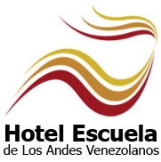
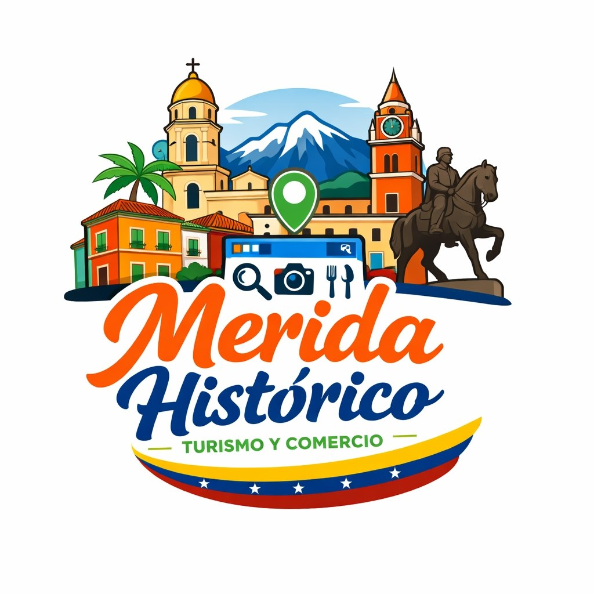
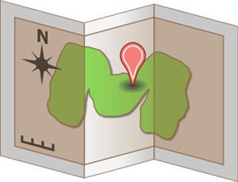
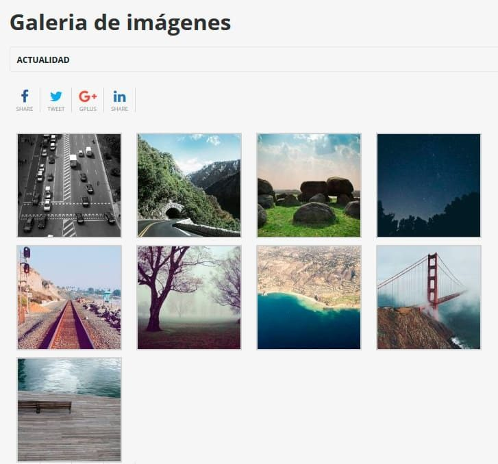

El casco central de Mérida representa el corazón histórico y cultural de la ciudad, donde se concentran los principales monumentos patrimoniales.
Escucha la visión detrás de una plataforma diseñada para preservar, promocionar y conectar el patrimonio histórico de Mérida con el entorno digital.

La creación de esta plataforma digital nace de la necesidad de rescatar y poner en valor la invaluable memoria histórica del Casco Central de Mérida, un espacio donde la identidad colectiva se manifiesta a través de sus monumentos, casas de arquitectura colonial y recintos culturales que han resistido el paso del tiempo. Ante la vertiginosa evolución de las dinámicas actuales, el patrimonio tangible e intangible de la ciudad exige nuevos canales de difusión que superen las limitaciones de los formatos tradicionales, permitiendo que tanto residentes como visitantes accedan a un conocimiento profundo desde cualquier lugar y en cualquier momento.
Esta propuesta se fundamenta en la democratización de la información turística; al digitalizar los atractivos culturales, se construye una herramienta de interpretación patrimonial que no solo educa y sensibiliza sobre nuestra herencia, sino que también fomenta un sentido de pertenencia y protección hacia el entorno urbano. En última instancia, la página web actúa como un puente entre la historia y la modernidad, transformando el centro histórico en un museo dinámico y accesible que invita a ser redescubierto con una mirada consciente, técnica y profundamente respetuosa hacia nuestras raíces.
Desarrollo de una plataforma digital para fortalecer la identidad cultural y turística del Centro Histórico de Mérida.
Desarrollar una plataforma digital interactiva que integre y difunda el patrimonio histórico, cultural y comercial del Centro Histórico de Mérida para fortalecer la identidad local y el turismo.
La plataforma “Mérida Histórica” integrará herramientas interactivas para mejorar la experiencia cultural y turística de los usuarios.

Guía geolocalizada que permitirá identificar iglesias, plazas, museos y establecimientos cercanos dentro del centro histórico.

Repositorio visual con imágenes históricas y actuales que muestran los lugares mas importantes del centro histórico.
Espacios dedicados a los establecimientos y emprendimientos del centro histórico de Mérida.
Principios fundamentales que orientan el desarrollo de la plataforma digital “Mérida Histórica”.
Diseñar y desarrollar una plataforma web interactiva que promueva el patrimonio histórico, cultural y comercial del Centro Histórico de Mérida, ofreciendo una experiencia digital accesible, dinámica y educativa para turistas, estudiantes y habitantes de la ciudad.
Consolidarse como una referencia digital innovadora para la difusión turística y cultural de Mérida, fortaleciendo la identidad histórica local mediante herramientas tecnológicas modernas e interactivas.
Principios fundamentales que orientan el desarrollo de la plataforma “Mérida Histórica”.
Uso de herramientas digitales modernas para transformar la experiencia turística y cultural.
Promoción y preservación del patrimonio histórico del Centro Histórico de Mérida.
Desarrollo de una plataforma adaptable a distintos dispositivos y usuarios.
Integración de recursos interactivos y dinámicos para enriquecer la experiencia digital.
Fortalecer el sentido de pertenencia y la identidad local mediante la tecnología.
Difundir la importancia histórica y arquitectónica del centro histórico para futuras generaciones.
Sectores que se verán favorecidos mediante el uso de la plataforma “Mérida Histórica”.
Obtendrán una guía digital interactiva que enriquecerá sus recorridos por el Centro Histórico de Mérida mediante información cultural y turística.
Estudiantes, investigadores y ciudadanos tendrán acceso a una fuente centralizada de información histórica y cultural de la ciudad.
Los establecimientos tradicionales y pequeños negocios incrementarán su visibilidad dentro de un ecosistema digital orientado al turismo.
Explora un ejemplo aproximado de cómo funcionaría la plataforma “Mérida Histórica” enfocada en el Centro Histórico de Mérida. (No representa diseño final y esta sujeto a multiples cambios y añadidos).
Ver demostración